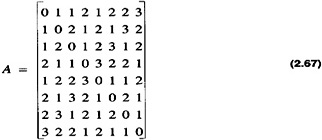
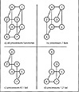
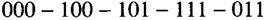
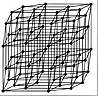
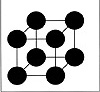

by Alan Parker
CRC Press, CRC Press LLC
ISBN: 0849371716 Pub Date: 08/01/93
|
|
Algorithms and Data Structures in C++
by Alan Parker CRC Press, CRC Press LLC ISBN: 0849371716 Pub Date: 08/01/93 |
| Previous | Table of Contents | Next |
Definition 2.24
The least-weighted path-length graph is the directed graph where the weights of each edge correspond to the shortest path-length between the nodes.
The associated weighted matrix consists of the path-length between the nodes. The path-length between a processor and itself is defined to be zero. The associated weighted matrix for an 8-node hypercube with all functional nodes is

aij is the distance between nodes i and j. If nodes i and j are not connected via any path then aij = ∞.
This section introduces the scenario of failed processors. It is assumed if a processors or node fails then all edges incident on the processor are removed from the graph. The remaining processors will attempt to function as a working subset while still using the message passing algorithms of the previous sections. This will lead to a characterization of subcubes of a hypercube which support message passing. Consider the scenario illustrated in Figure 2.20. In the figure there are three scenarios with failed processors.
In Figure 2.20b a single processor has failed. The remaining processors can communicate with each other using a simple modification of the algorithm which traverses the first existing edge encountered.
Similarly, in Figure 2.20c communication is still supported via the modified algorithm. This is illustrated in Table 2.6. Notice that in Table 2.6 the next processor after 000 was 001. For the topology in the figure the processor did not exist so the algorithm proceeded to the next bit from right to left which gave 010. Since this processor existed the message was sent along the path.

Figure 2.20 Hypercube with Failed Nodes
| Processor Source | Processor Destination | Exclusive-Or | Next Processor |
|---|---|---|---|
| 000 | 111 | 111 | 010 |
| 010 | 111 | 101 | 011 |
| 011 | 111 | 100 | 111 |
The scenario in Figure 2.20d is quite different. This is illustrated in Table 2.7.
In this case, the first processor considered to is 001 but it is not functional. Processor 010 is considered next but it is not functional. For this case the modified algorithm has failed to route the message from processor 000 to 011. There exists a path from 000 to 011 one of which is

Notice that the distance between the processors has increased as a result of the two processors failures. This attribute is the motivation for the characterization of efficient hypercubes in the next section.
| Processor Source | Processor Destination | Exclusive-Or | Next Processor |
|---|---|---|---|
| 000 | 011 | 011 | ? |
Definition 2.25
A subcube of a hypercube is efficient if the distance between any two functional processors in the subcube is the same as the distance in the hypercube.
A subcube with this property is referred to as an efficient hypercube. This is equivalent to saying that if A represents the least-weighted path-length matrix of the hypercube and B represents the least-weighted path-length matrix of the efficient subcube then if i and j are functional processors in the subcube then bij = aij. This elegant result is proven in Problem 2.20. The least-weighted path-length matrix for efficient hypercubes place ∞ in column i and row i if processor i is failed.
The cubes in Figure 2.20b and c are efficient while the cube in Figure 2.20d is not efficient. If the cube is efficient then the modified message passing algorithm in the previous section works. The next section implements the procedure for hypercubes with failed nodes.
The code to simulate message passing in an efficient hypercube is shown in Code List 2.8. The output of the program is shown in Code List 2.9. The path for communicating from 0 to 63 is given as 0-1-3-7-15-31-63 as shown in Code List 2.9. Subsequently processor 31 is deactivated and a new path is calculated as 0-1-3-7-15-47-63 which avoids processor 31 and traverses remaining edges in the cube. The program continues to remove nodes from the cube and still calculates the path. All the subcubes created result in an efficient subcube.
Code List 2.8 Message Passing in an Efficient Hypercube
Code List 2.9 Output of Program in Code List 2.8
This section presents a C++ program to visualize the hypercube. A program to visualize the cube is shown in Code List 2.10. The program was used to generate the PostScript image in Figure 2.21 for a 64 node hypercube. The program uses a class structure similar to the program to visualize the Tower of Hanoi in Code List 2.6.
The program introduces a new PostScript construct to draw and fill a circle
x y radius angle1 angle2 arc
The program uses the scale operator to force the image to fill a specified area. To illustrate this, notice that the program generated both Figure 2.21 and Figure 2.22. The nodes in Figure 2.22 are enlarged via the scale operator while the nodes in Figure 2.21 are reduced accordingly.
The strategy in drawing the hypercube is such that only at most two processors appear in any fixed horizontal or vertical line. The cube is grown by replications to the right and downward.

Figure 2.21 A 64-Node Hypercube
Code List 2.10 C++ Code to Visualize the Hypercube

Figure 2.22 An 8-Node Hypercube
Code List 2.11 Output of Program in Code List 2.10
| Previous | Table of Contents | Next |
){kind=link}
){kind=link}
){kind=link}
){kind=link}
){kind=link}
){kind=link}
){kind=link}
){kind=link}
){kind=link}
){kind=link}
){kind=link}
){kind=link}
){kind=link}
){kind=link}
){kind=link}
){kind=link}
){kind=link}
){kind=link}
){kind=link}